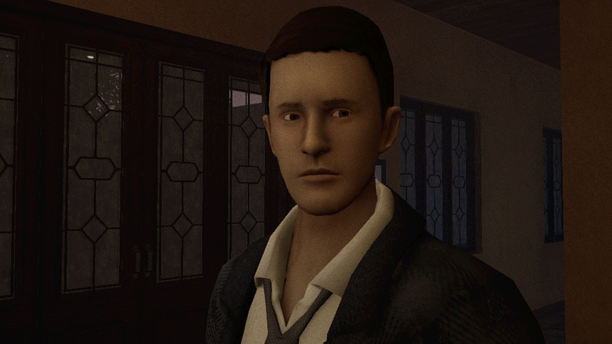
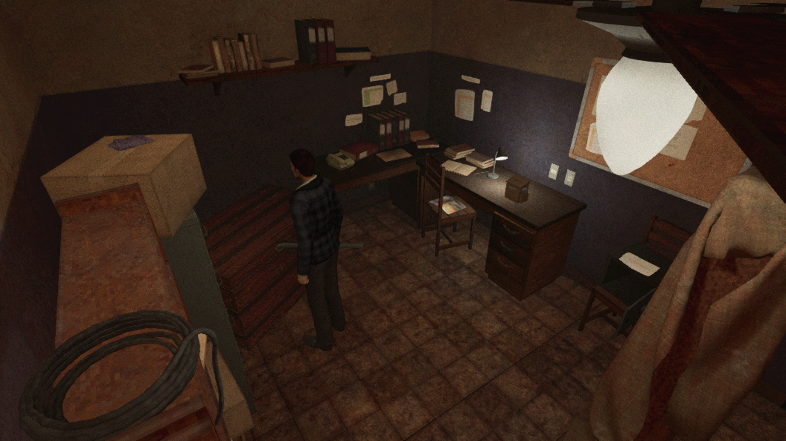

Observo: vale a chance?!
data 29/01/2023
Observo é um jogo de terror brasileiro que pode até ter passado despercebido, por isso estou aqui para te contar um pouco sobre esse jogo e porquê você deveria dar uma chance para esse conto jogável.
Desenvolvido pela SpaceZeta Games e lançado em outubro de 2022, Observo é um jogo de survival-horror que faz homenagem aos clássicos de PS2 e mesmo contando com todos os elementos iconicos desses jogos, ainda deixa espaço para que o jogador encontre novas estratégias de combate e exploração.
Porém atenção, se você espera por gráficos fotorealisticos, efeitos de luzes e som de outro nível ou roteiro com várias camadas de complexidade… é melhor procurar outro jogo.
Observo traz uma história simples em uma ambientação detalhada e inclusa, mecânica simples e trilha sonora muito boa. A experiência como um todo é como estar jogando uma mistura de Silent Hill com Resident Evil em um PS2 numa tv de tubo, e não por que o jogo é ruim, ou mal acabado, mas sim pois ele se inspira nessa estética e a segue durante todo o gameplay.
Os elementos brasileiros do jogo são muito visiveis desde o começo até o fim, eles estão presentes na história, nos personagens, nos cenários e até na música.
Mesmo sem contar com grande variedade de cenários, a pousada é extremamente detalhada aumentando a imersão do jogo e trazendo uma nostalgia a cada área nova descoberta ou puzzle resolvido.
Com aproximadas 2 horas de gameplay, é como estar jogando um conto de terror. O jogo é uma ótima pedida para aquelas tardes de domingo tediosas.
Vale lembrar que o jogo foi todo criado por uma unica pessoa, a Ana Rocha e vale muito a pena dar uma chance, por todos os motivos já ditos e também para motivar mais produções incríveis como essa.
Olá este é um anuncio!
No momento ainda não temos anuncios disponíveis mas isso não me impede de pedir pra você me seguir no Twitter.
É isso, espero te encontrar em breve e até lá se cuide, e também lembre se de cuidar dos seus eletrônicos, pois todos sabemos que eles vão cuidar de nós em algum momento do futuro.